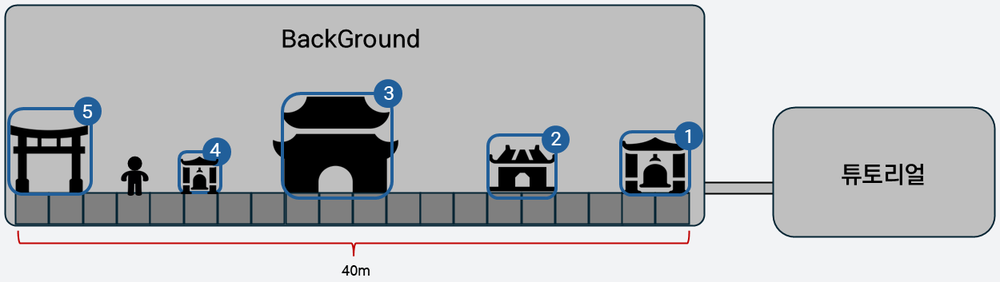
| No. | 시설 | 기능 |
|---|---|---|
| 1 | 상점 | 재화 및 소모품 구매 |
| 2 | 흥신소 | 입장 후 타이쿤 진행 |
| 3 | 저승 재판소 | 스토리 관련 기능 |
| 4 | 퀘스트 알림판 | 메인·서브 퀘스트 수락 |
| 5 | 저승 관문 | 던전 입장(메인 퀘스트) |
레이어 순서: 배경 → 건물 → 바닥 타일·플레이어
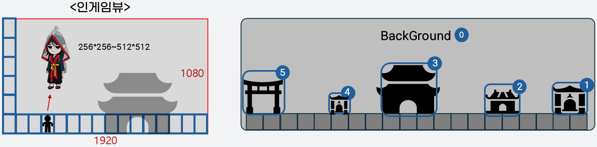
| 리소스 | 리소스명 | 러프 크기(px) | 가로 배율 | 세로 배율 |
|---|---|---|---|---|
| 배경 | Adv_Town_Background_ | 1920×1080 등 | 40 | 15 |
| 상점 | Adv_Town_Shop | 480×360 ~ 512×512 | 4 | 2 |
| 흥신소 | Adv_Town_TaycoonEntry | 480×360 ~ 512×512 | 4 | 2 |
| 저승 재판소 | Adv_Town_Tribunal | 720×720 ~ 1024×1024 | 6 | 4 |
| 퀘스트 알림판 | Adv_Town_Questboard | 300×270 ~ 512×512 | 2 | 1 |
| 저승 관문 | Adv_Town_Gateway | 480×360 ~ 512×512 | 4 | 2 |
배율은 캐릭터 크기 기준이다. 러프 크기는 원본의 참고 범위이며, 최종 규격은 제작 시 조정한다.
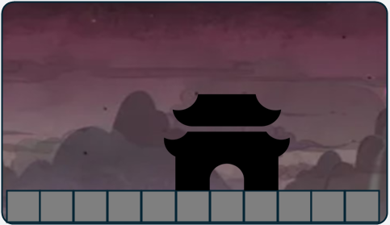
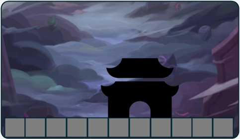
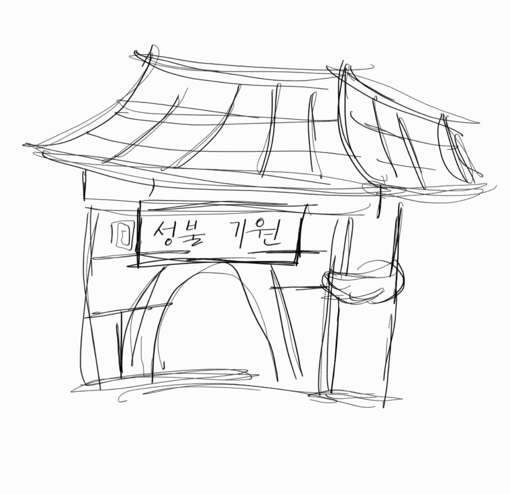
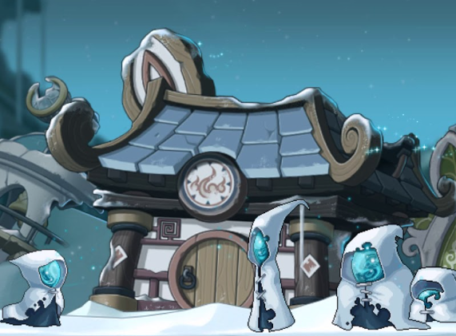
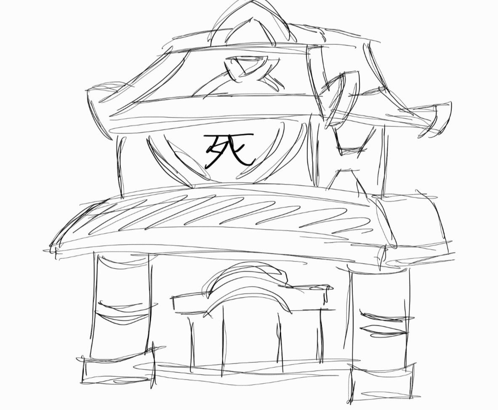
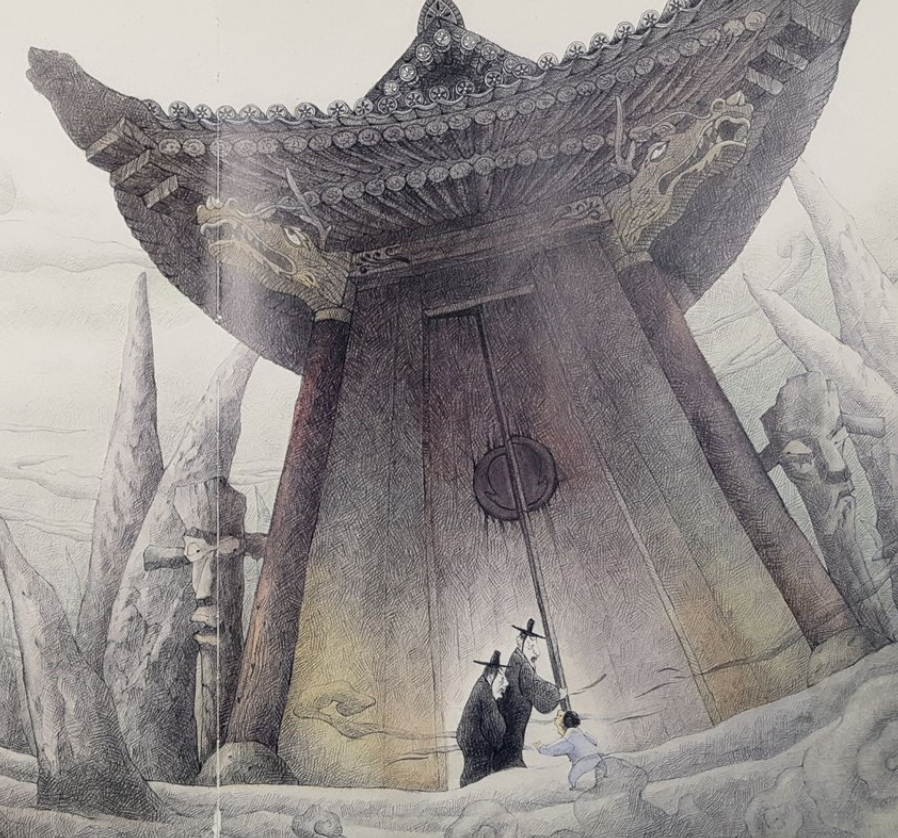
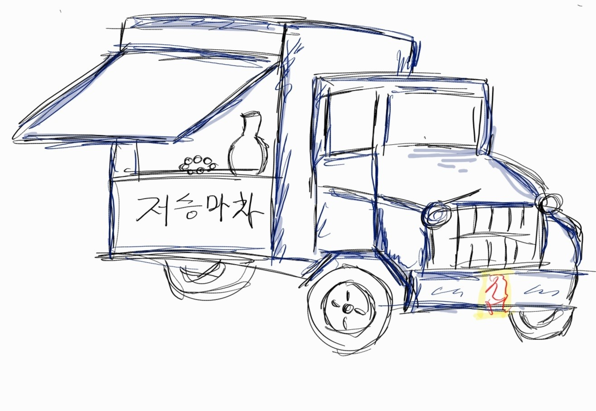
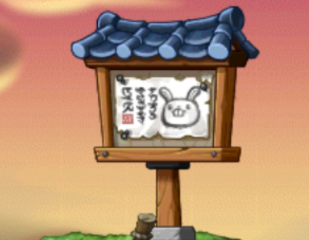
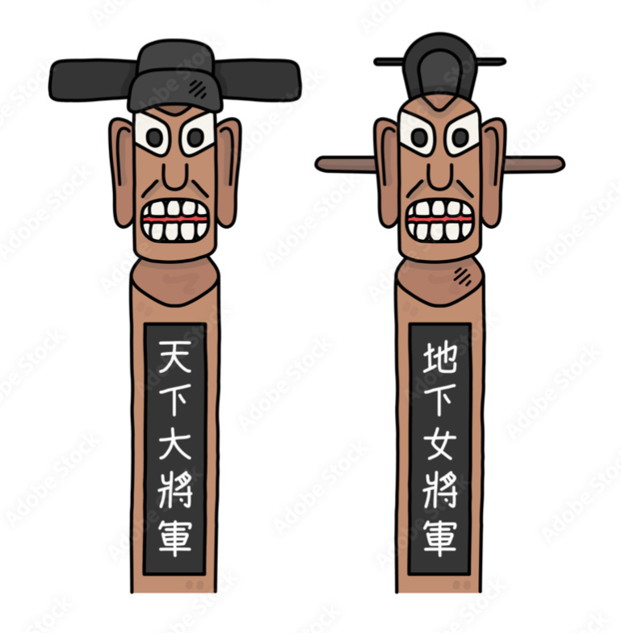
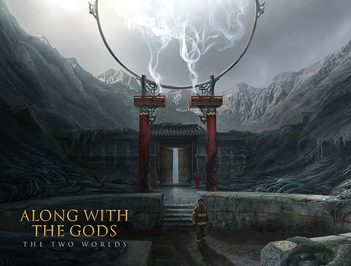
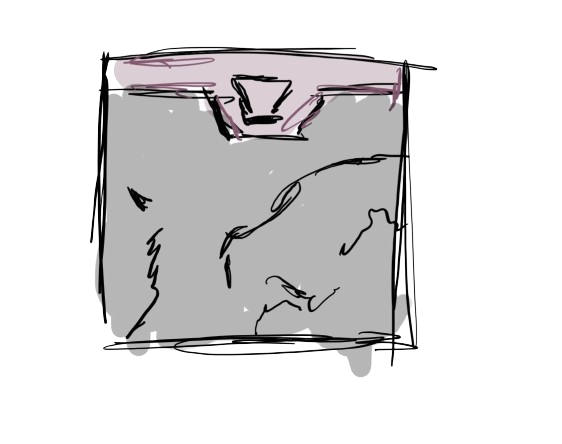
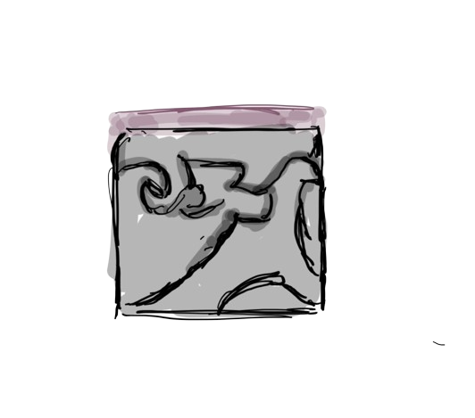
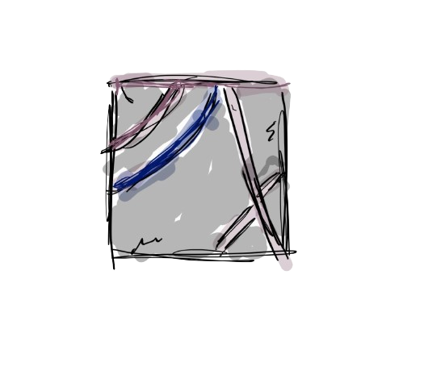
기본 형태와 문양 스케치
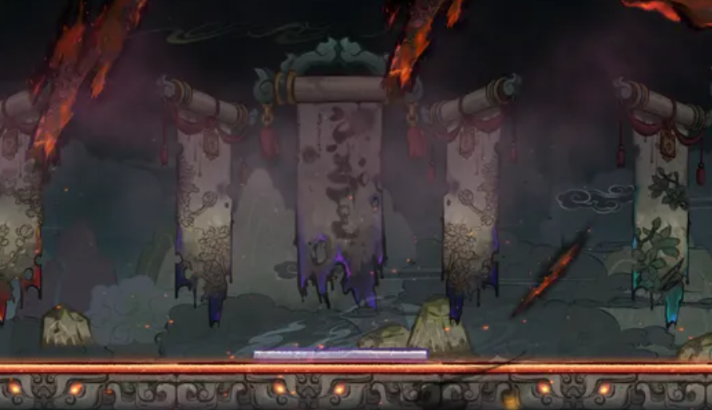
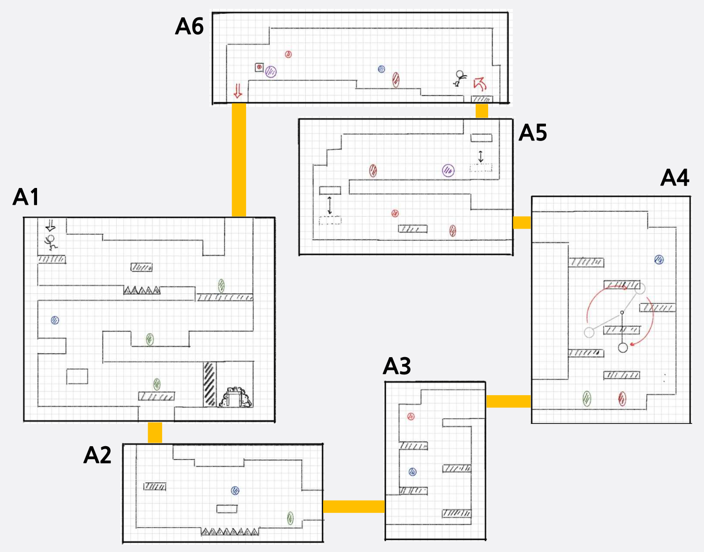
| 표시 | 설명 |
|---|---|
| 연결부 | 구역 사이 연결 |
| 초록 | 일꾼 망령 A 배치 |
| 빨강 타원 | 일꾼 망령 B 배치 |
| 파랑 | 일꾼 망령 C 배치 |
| 빨강 원 | 일꾼 망령 D 배치 |
| 보라 | 작업 반장 A 배치 |
A1~A6 구역은 도면의 연결부로 이어진다.
A6의 레버를 누르면 A1을 막고 있던 벽이 올라간다.
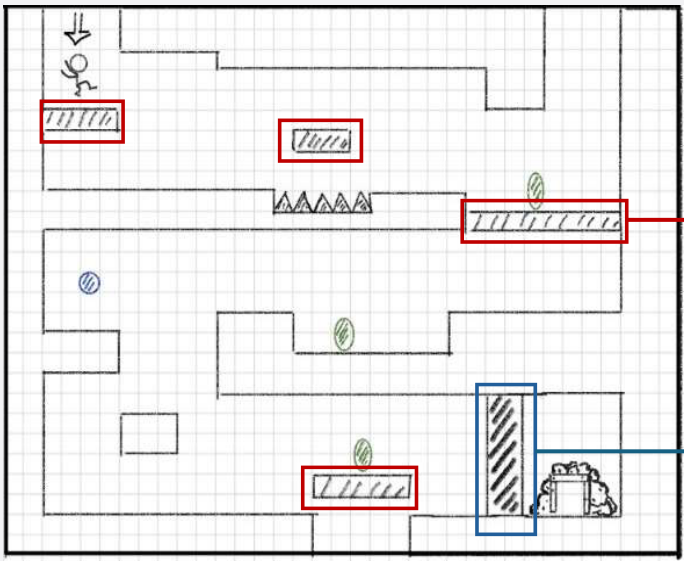
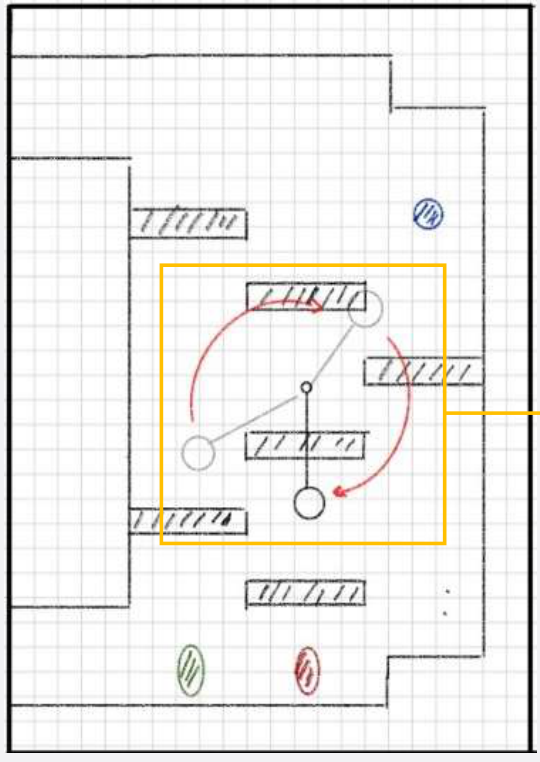
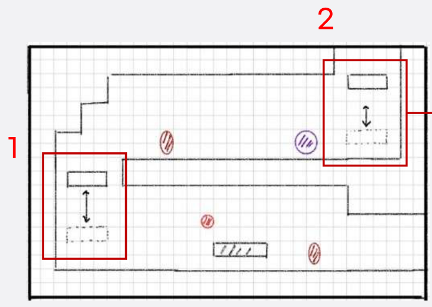
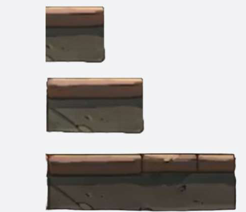
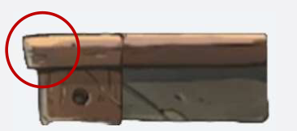
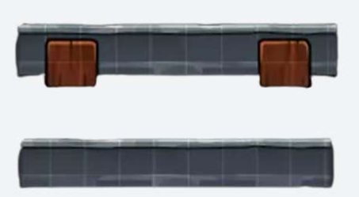
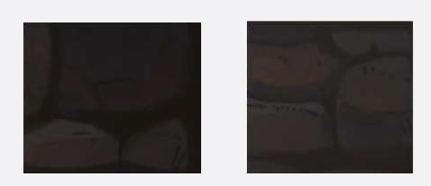
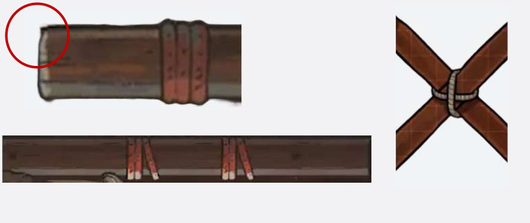
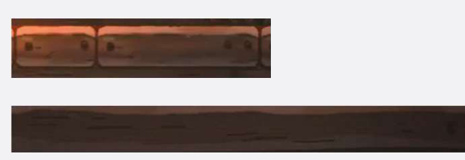